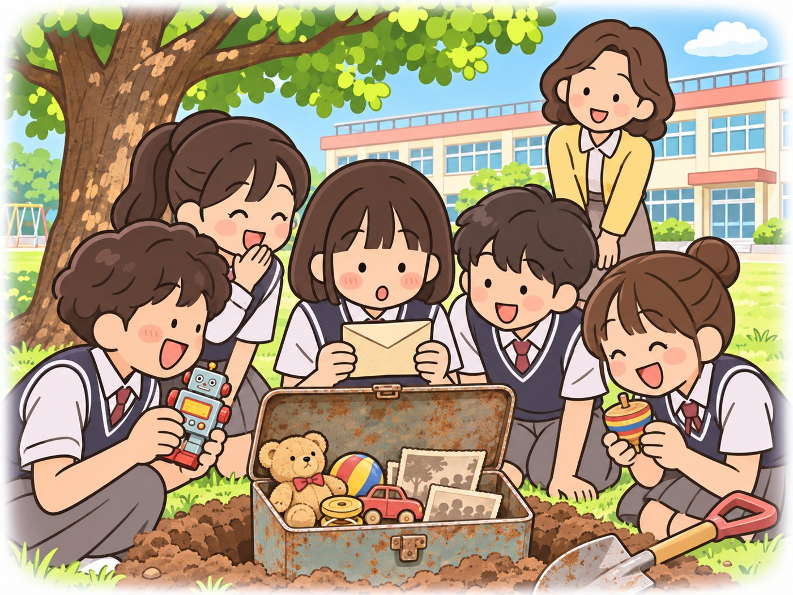
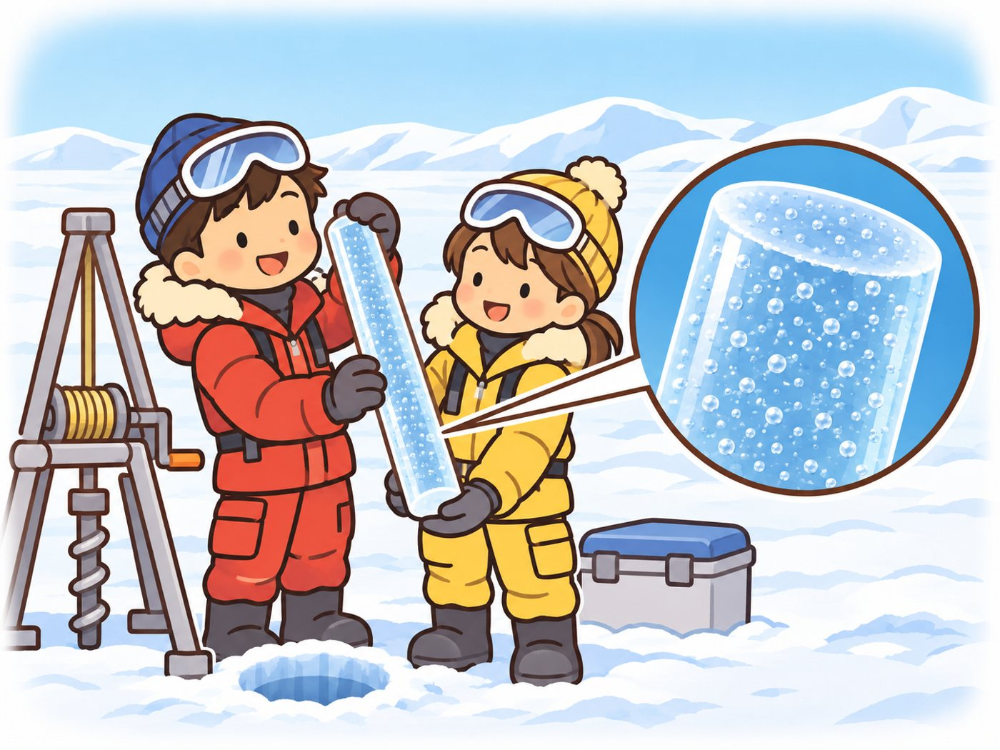

5년 만에 연 상자
The Box Under the Tree
⓪ 단어 먼저 □ 맞은편 Words · 클래스카드
① 처음 읽기 분초
② 음원 따라 읽기 □ □
③ 다시 읽기 음원보다 빨리 분초

읽기 TIPnever will 뒤에는 앞에 나온 become an artist가 빠졌어요. 되돌아가 채우지 말고 ‘앞으로도 (화가가) 안 될지도’로 받아 그대로 읽어 나가요.
Words
elementary school초등학교
reason이유
bury(땅에) 묻다
promise약속하다; 약속
honestly솔직히
completely완전히, 까맣게
dig up파내다
envelope봉투
future미래(의)
sketchbook스케치북
artist화가, 예술가
answer대답하다; 대답
time capsule타임캡슐
anything아무것도, 무엇이든
job직업, 일
finally마침내
쉬운 단어, 이 글에서는
- self 핵심 뜻: 다른 누구도 아닌 나 자신이 글에서: my future self = 미래의 나to my future self
- still 핵심 뜻: 멈춘 채 그대로 있어요이 글에서: still made me smile = 그래도 여전히 웃게 했다the drawings still made me smile

Check Your Reading
✳내용 확인정답 및 해설 p.2 · 4개 이상 통과심경 변화글에 드러난 ‘나’의 심경 변화로 가장 알맞은 것은?
내용 불일치글의 내용과 일치하지 않는 것은?
순서지문을 덮고주어진 글 다음에 이어질 글의 순서로 가장 알맞은 것은?
(A) We had promised to open it together when we became middle school students.
(B) Honestly, I had completely forgotten about that promise until our old teacher, Ms. Kang, sent everyone a message.
(C) Five years earlier, my fourth-grade class had buried a time capsule under the big tree behind the school.
빈칸지문을 덮고글의 내용으로 보아, 빈칸에 들어갈 말로 가장 알맞은 것은?
서술형우리말과 같도록 괄호 안의 말을 이용하여 영어 문장을 쓰세요.
(1) 강 선생님이 메시지를 보냈을 때, 나는 그 약속을 이미 잊은 상태였다. (already, forget)
(2) 나는 그 전에 그런 편지를 받아 본 적이 없었다. (never, get)
(3) 나는 한 시간째 이 책을 읽고 있다. (read, for)
Focus Reading
✳앞에서부터 읽기 · 구조 표시 · 문단 한마디로정답 및 해설 p.2①Chunk Reading 앞에서부터 바로 읽고, 막히는 곳만 /로 끊어 아래에 우리말 뒤로 돌아가지 않기!
②★ 문장과 해석이 잘 안 되는 문장은 구조 표시 → Hint 확인 동사 연결사( )형용사구·절< >부사구·절[ ]명사절 분사구문☞ p.6
문단마다 한마디로예와 꾸미는 말은 빼고 그 문단이 말하려는 것만 짧게
Writing Training
✳쉬운 단어 · 빈칸 · 영작지문과 왼쪽 쪽을 가리고 해요지문 속 문법쓰기 전에 확인 · 헷갈리면 Nova Grammar 3권으로!
| 2~3행 | my fourth-grade class had buried a time capsule — 과거완료: 학교에 다시 간 것(과거)보다 먼저 일어난 일 | ☞ 3권 p.15 POINT 4 |
| 5~6행 | I had completely forgotten about that promise until … — 과거완료(완료): 메시지를 받을 때까지 이미 잊은 상태 | ☞ 3권 p.16 POINT 5 |
| 10~11행 | a letter that I had written to my future self — 관계대명사절 안의 과거완료: 편지를 찾기 전에 써 둔 것 | ☞ 3권 p.17 POINT 6 |
| 19행 | I haven’t become an artist — 현재완료(결과): 지금까지 화가가 되지 않았다 | ☞ 3권 p.10 POINT 1 |
A쉬운 단어 하나로 — turn를 써서 우리말을 영어로 쓰세요. 같은 단어, 다른 뜻 · 핵심 이미지: 돌다 · 돌리다 · (~으로) 변하다 · 차례
다음 모퉁이에서 왼쪽으로 돌아라.
나뭇잎이 빨갛게 변했다.
이제 네 차례야.
B우리말에 맞게 빈칸에 알맞은 말을 쓰세요.
지난 토요일, 나는 특별한 이유로 옛 초등학교에 다시 갔다.
Last Saturday, I went to my old school for a special reason.
그때 나는 내 이름이 적힌 봉투 하나를 찾았다.
Then I found an with my on it.
나는 거의 2년 동안 아무것도 그리지 않았었다.
I drawn anything for two years.
C우리말을 영어로 쓰세요. ( ) 안의 말을 꼭 쓰세요.
종이는 누렇게 변해 있었지만, 그림들은 여전히 나를 웃게 했다. (had turned, make)
그때부터 나는 매일 저녁 20분씩 그림을 그려 오고 있다. (since then, have been)
그날 밤, 나는 침대 밑에서 옛 스케치북을 꺼냈다. (take out, from under)
D요약문 — 글 전체를 영어 한 문장으로 완성하세요. (start, again을 쓸 것 · 빈칸에 5단어 안팎)
Thanks to an old letter, the writer .
얼음 속에 남은 옛 공기
Messages in the Ice
⓪ 단어 먼저 □ 맞은편 Words · 클래스카드
① 처음 읽기 분초
② 음원 따라 읽기 □ □
③ 다시 읽기 음원보다 빨리 분초
*Antarctica 남극 대륙*carbon dioxide 이산화탄소

읽기 TIPwork like ~ = ~처럼 작동하다(~와 같은 역할을 하다). ‘이 방울들은 → 작은 타임캡슐처럼 작동한다’ 순서 그대로 받아요. 비유가 나오면 무엇을 무엇에 빗댔는지(공기 방울 = 타임캡슐)만 잡고, 그 까닭은 읽어 나가며 확인해요.
Words
collect모으다
information정보
pile up쌓이다
press누르다
핵심 뜻: 위에서 힘을 주어 눌러요
thick두꺼운
trap가두다
tiny아주 작은
bubble거품, (공기) 방울
drill(구멍을) 뚫다
glacier빙하
melt녹다
store보관하다, 저장하다
tube관, 통
form생기다, 형성되다
danger위험
freezer냉동고
쉬운 단어, 이 글에서는
- find 핵심 뜻: 찾아서 알게 돼요이 글에서: find out = (조사해서) 알아내다they can find out
Check Your Reading
✳내용 확인정답 및 해설 p.4 · 4개 이상 통과제목글의 제목으로 가장 알맞은 것은?
내용 일치글의 내용과 일치하는 것은?
문장 삽입지문을 덮고글의 흐름으로 보아, 주어진 문장이 들어가기에 가장 알맞은 곳은?
When the snow turns into ice, it traps tiny bubbles of air. ( ① ) These bubbles work like small time capsules. ( ② ) By studying the air in the bubbles, they can find out what the air was like long ago. ( ③ ) Some of these bubbles had formed long before humans built the first cities. ( ④ ) Ice cores have already taught scientists a lot about the past. ( ⑤ ) For example, they have shown that there is more carbon dioxide in the air today than at any time in the past 800,000 years.
어법(A), (B), (C)의 각 네모 안에서 어법에 맞는 말로 가장 알맞은 것은?
• When I arrived at the theater, the movie (B) [has already started / had already started].
• My uncle has worked at a research station in Antarctica (C) [for / since] ten years.
요약문다음 글의 내용을 한 문장으로 요약할 때, 빈칸 (A), (B)에 들어갈 말로 가장 알맞은 것은?
Focus Reading
✳앞에서부터 읽기 · 구조 표시 · 문단 한마디로정답 및 해설 p.4①Chunk Reading 앞에서부터 바로 읽고, 막히는 곳만 /로 끊어 아래에 우리말 뒤로 돌아가지 않기!
②★ 문장과 해석이 잘 안 되는 문장은 구조 표시 → Hint 확인 동사 연결사( )형용사구·절< >부사구·절[ ]명사절 분사구문☞ p.6
문단마다 한마디로예와 꾸미는 말은 빼고 그 문단이 말하려는 것만 짧게
Writing Training
✳쉬운 단어 · 빈칸 · 영작지문과 왼쪽 쪽을 가리고 해요지문 속 문법쓰기 전에 확인 · 헷갈리면 Nova Grammar 3권으로!
| 1행 | a library that has been collecting information — 현재완료진행: 수십만 년 전부터 지금까지 계속 | ☞ 3권 p.11 POINT 2 |
| 11~12행 | Some of these bubbles had formed long before humans built the first cities — 과거완료: 도시를 세운 것(과거)보다 먼저 | ☞ 3권 p.17 POINT 6 |
| 16~17행 | the Earth has been getting warmer — 현재완료진행 + get + 비교급: 점점 더 따뜻해져 오고 있다 | ☞ 3권 p.11 POINT 2 |
| 9행 | long tubes of ice called ice cores — 명사 뒤 과거분사: ‘아이스 코어’라고 불리는 | ☞ 2권 p.141 POINT 4 |
A쉬운 단어 하나로 — work를 써서 우리말을 영어로 쓰세요. 같은 단어, 다른 뜻 · 핵심 이미지: 일하다 · (기계가) 작동하다 · 효과가 있다
우리 아빠는 은행에서 일하신다.
이 컴퓨터는 작동하지 않는다.
이 방법은 정말 효과가 있다.
B우리말에 맞게 빈칸에 알맞은 말을 쓰세요.
그곳에는 책도 컴퓨터도 없다.
It has no or .
남극 대륙과 그린란드에서는 아주 오랫동안 눈이 내리고 쌓여 왔다.
In Antarctica and Greenland, snow has been and piling up for a very time.
그러나 이 도서관은 위험에 처해 있다.
However, this is in .
C우리말을 영어로 쓰세요. ( ) 안의 말을 꼭 쓰세요.
아이스 코어는 이미 과학자들에게 과거에 대해 많은 것을 알려 주었다. (teach, already)
오늘날 공기 속에는 지난 80만 년 동안의 어느 때보다 이산화탄소가 많다. (more, than at any time)
그래서 과학자들은 이 빙하들에서 아이스 코어를 모아 특별한 냉동고에 보관해 오고 있다. (have been collecting, store)
D요약문 — 글 전체를 영어 한 문장으로 완성하세요. (air, the past를 쓸 것 · 빈칸에 8단어 안팎)
Old ice is important because .
한빛중학교 50년
50 Years of Hanbit Middle School
⓪ 단어 먼저 □ 맞은편 Words · 클래스카드
① 처음 읽기 분초
② 음원 따라 읽기 □ □
③ 다시 읽기 음원보다 빨리 분초
50 Years of Hanbit Middle School
This year, Hanbit Middle School celebrates its 50th birthday. Over the past fifty years, more than 20,000 students have graduated from our school. Here is a look back at how our school has grown.
- 1976
Hanbit Middle School opened with only six classrooms and 240 students. Before the school opened, students in our town had walked an hour to a school in the next town.
- 1989
A library was built next to the main building. It has been the most popular place for students ever since.
- 1997
The number of students reached 1,200, the largest number in the school’s history.
- 2008
Students started the school newspaper, Hanbit Voice. They have been publishing it every month since then.
- 2020
Classes moved online for three months because of COVID-19.
- 2026
Our new science center will open in September.
Join us at the 50th birthday festival on May 15! Former students who have kept old photos of the school are welcome to bring them.
읽기 TIPbecause of + 명사 = ~ 때문에. ‘옮겨 갔다 → 석 달 동안 → 코로나19 때문에’처럼 덧붙는 순서대로 받아요.
Words
celebrate축하하다, 기념하다
graduate졸업하다
grow자라다, 커지다
classroom교실
main building본관
popular인기 있는
ever since그 뒤로 줄곧
reach~에 이르다
history역사
publish펴내다, 발행하다
festival축제
former예전의, 이전의
online온라인으로
center센터, 중심
photo사진
welcome환영받는
핵심 뜻: 반갑게 맞아들여요
쉬운 단어, 이 글에서는
- next 핵심 뜻: 바로 다음, 바로 옆이 글에서: the next town = 이웃 마을(바로 옆 마을)a school in the next town

Check Your Reading
✳내용 확인정답 및 해설 p.7 · 4개 이상 통과내용 불일치윗글의 내용과 일치하지 않는 것은?
무관한 문장지문을 덮고다음 글에서 전체 흐름과 관계 없는 문장은?
빈칸윗글의 내용으로 보아, 빈칸에 들어갈 말로 가장 알맞은 것은?
어법지문을 덮고밑줄 친 부분 중 어법상 틀린 것은?
서술형윗글을 읽고 질문에 완전한 영어 문장으로 답하세요.
(1) How long has the library been the most popular place for students?
(2) How many students have graduated from Hanbit Middle School?
Focus Reading
✳앞에서부터 읽기 · 구조 표시 · 문단 한마디로정답 및 해설 p.7①Chunk Reading 앞에서부터 바로 읽고, 막히는 곳만 /로 끊어 아래에 우리말 뒤로 돌아가지 않기!
②★ 문장과 해석이 잘 안 되는 문장은 구조 표시 → Hint 확인 동사 연결사( )형용사구·절< >부사구·절[ ]명사절 분사구문☞ p.6
문단마다 한마디로예와 꾸미는 말은 빼고 그 문단이 말하려는 것만 짧게
Writing Training
✳쉬운 단어 · 빈칸 · 영작지문과 왼쪽 쪽을 가리고 해요지문 속 문법쓰기 전에 확인 · 헷갈리면 Nova Grammar 3권으로!
| students in our town had walked an hour — 과거완료: 학교가 문을 열기(과거) 전까지 | ☞ 3권 p.17 POINT 6 | |
| Here is a look back at how our school has grown — 간접의문문 + 현재완료: 어떻게 자라 왔는지 | ☞ 3권 p.10 POINT 1 | |
| They have been publishing it every month since then — 현재완료진행: 2008년부터 지금까지 계속 | ☞ 3권 p.11 POINT 2 | |
| Former students who have kept old photos — 주격 관계대명사 who + 현재완료 | ☞ 3권 p.10 POINT 1 |
A쉬운 단어 하나로 — look를 써서 우리말을 영어로 쓰세요. 같은 단어, 다른 뜻 · 핵심 이미지: 보다 · ~해 보이다 · 한번 봄(명사)
이 사진을 봐.
너 오늘 피곤해 보여.
내가 한번 봐도 될까?
B우리말에 맞게 빈칸에 알맞은 말을 쓰세요.
새 과학관이 9월에 문을 연다.
Our new science will in September.
5월 15일 50번째 생일 축제에 함께해 주세요!
us at the 50th birthday on May 15!
지난 50년 동안 2만 명이 넘는 학생이 우리 학교를 졸업했다.
Over the fifty years, more than 20,000 students have from our school.
C우리말을 영어로 쓰세요. ( ) 안의 말을 꼭 쓰세요.
한빛중학교는 교실 여섯 개와 학생 240명으로 문을 열었다. (open, only)
학생 수가 학교 역사상 가장 많은 1,200명에 이르렀다. (the number of, reach)
학생들이 학교 신문 「한빛 보이스」를 시작했다. (start, newspaper)
D요약문 — 글 전체를 영어 한 문장으로 완성하세요. (grow, from, into를 쓸 것 · 빈칸에 9단어 안팎)
Over fifty years, Hanbit Middle School has .
Word Check
✳Unit 01 단어 확인정답 및 해설 p.9A영어 → 우리말
B문맥 빈칸 지문 속 구절 — 첫 글자 힌트와 (뜻)을 보고, 지문에 나온 모양 그대로 써요
When we finally d u the box, everyone …(파내다)
… written to my f self.(미래(의))
… haven’t become an a, and maybe …(화가, 예술가)
… I found an e with my name …(봉투)
… out my old s from under my …(스케치북)
… I can finally a, “Yes.”(대답하다; 대답)
… has been collecting i for hundreds of …(정보)
… year, new snow p down on the …(누르다)
… into ice, it t tiny bubbles of …(가두다)
… scientists have been c ice cores from …(모으다)
… been falling and p u for a very …(쌓이다)
… these glaciers and s them in special …(보관하다, 저장하다)
… 20,000 students have g from our school.(졸업하다)
… with only six c and 240 students.(교실)
… snow turns into t ice.(두꺼운)
… number of students r 1,200, the largest …(~에 이르다)
… ice, it traps t bubbles of air.(아주 작은)
F students who have …(예전의, 이전의)
Unit Review
✳Unit 01 돌아보기논리 연습 · 무엇이 먼저 일어났나 밑줄 친 두 일 가운데 먼저 일어난 일을 우리말로 쓰고, 그렇게 판단한 단서(had p.p. · since · before 등)에 동그라미 해요
Last Saturday, I went back to my old elementary school for a special reason. Five years earlier, my fourth-grade class had buried a time capsule.
→ Reading ① 1~3행
The pages had turned yellow, but the drawings still made me smile.
→ Reading ① 17~18행
Some of these bubbles had formed long before humans built the first cities.
→ Reading ② 11~12행
Scientists drill deep into the ice and pull out long tubes of ice.
→ Reading ② 8~9행
A library was built next to the main building. It has been the most popular place for students ever since.
→ Reading ③
Students started the school newspaper, Hanbit Voice. They have been publishing it every month since then.
→ Reading ③
생각하며 읽기 · 보기 없는 빈칸 지문을 가리고 앞뒤 문맥으로 한 단어를 채운 뒤, 그렇게 생각한 근거 단어를 써요
Honestly, I had completely about that promise until our old teacher, Ms. Kang, sent everyone a message.
근거가 된 단어 Reading ①
It was a letter that I had written to my self.
근거가 된 단어 Reading ①
Because the Earth has been getting , glaciers on high mountains have been melting quickly.
근거가 된 단어 Reading ②
By the air in the bubbles, they can find out what the air was like long ago.
근거가 된 단어 Reading ②
Before the school opened, students in our town had an hour to a school in the next town.
근거가 된 단어 Reading ③
This year, Hanbit Middle School celebrates its 50th .
근거가 된 단어 Reading ③